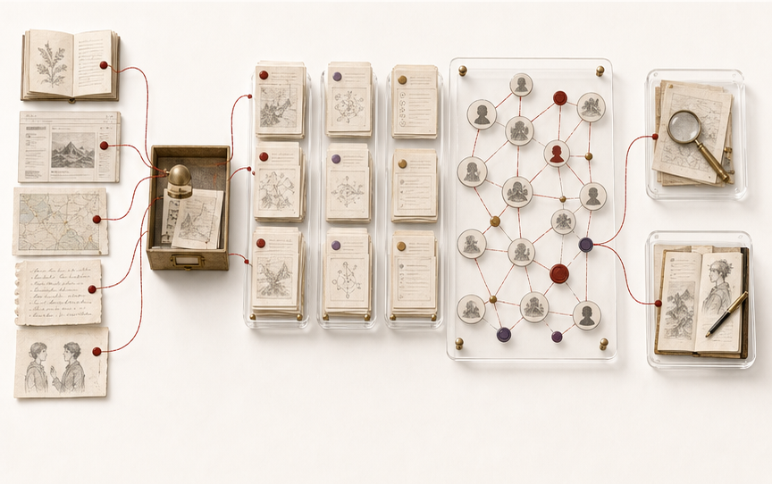

六种方法，一套持续运作的系统
创作负责把想法展开，产品设计负责把问题变成可用方案，支撑系统让所有项目可以被持续推进和复用。
创作方法
构建方法
支撑系统
让多个 AI 项目持续向前
OpenClaw 观察项目组合、优先级、依赖和长期记忆；具体任务被整理成边界清楚的任务包，交给 Codex 或专业 Agent 执行，验收后再把状态、经验和知识写回。
查看完整方法
创作，也有自己的方法


把资料，变成可以追溯和调用的知识

从一张 PPT 插画，到一个完整世界

先确定角色身份、服饰和道具，再让它进入可以继续拍摄的场景与镜头。
查看完整方法把方法留下来，让下一次做得更好
我把创作、研究、产品与项目中验证过的方法沉淀成可复用的资产，让每一次实践都能成为下一次的起点。